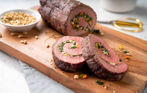

Baked beef roll

Less than premium beef roasts can still be amazing for special times by with this simple technique of cutting, filling, rolling and tying before cooking. Roast beef done this way is a real show-stopper and sure to spark some lively dinner conversation!
Author: thinkbeef
Ingridients
- 1 Eye of Round, Sirloin Tip or Top Sirloin Beef Roast (about 2 lb/1 kg)
- 1 pkg (142 g) baby spinach, rinsed
- 1 tbsp canola oil
- 4 cloves garlic, minced
- 1 orange or yellow sweet pepper, diced
- 1/4 cup chopped fresh parsley
- 1/2 cup fresh grated Parmesan cheese
- 1/4 cup pinenuts or slivered almonds, toasted
- 2 green onions, thinly sliced
- 4 slices prosciutto
- 1 cup shredded smoked Cheddar, mozzarella or provolone
- 1/4 tsp EACH salt and pepper
Steps
- Using a large chef’s knife or carving knife, slice roast lengthwise, stopping when you are about ½ inch (1 cm) from bottom of the roast. Open the roast up like a book and cut one side to “unroll” the roast to be about ¾ inch (2 cm) thick piece of meat.
- Do the same with the other side so that you end up with a rectangular piece of meat that is about ¾ inch (2 cm) thick.
- Using a flat meat mallet, pound the roast to about ½ inch (1 cm) thickness; set aside.
- In a large skillet over medium high heat, cook spinach until wilted. Drain any water. Add oil and return to medium heat. Add garlic, pepper and parsley; cook, stirring for about 5 minutes or until pepper is softened. Re-move from heat; stir in Parmesan, pine nuts and green onions; set aside.
- Lay prosciutto evenly over roast and sprinkle with shredded cheese. Spread spinach mixture evenly over top.
- Roll up jelly roll style and tie with kitchen string at 2 inch (5 cm) intervals. Season with salt and pepper.
- Place roast on rack in shallow pan or lined baking tray; oven-sear in preheated 450˚F (230˚C) oven for 10 minutes. Reduce heat to 275˚F (140˚C) and cook for about 1 hour and 15 minutes or until meat thermometer reaches 135˚F (57˚C). Remove from oven; cover loosely and let stand 10 minutes before slicing.
Back